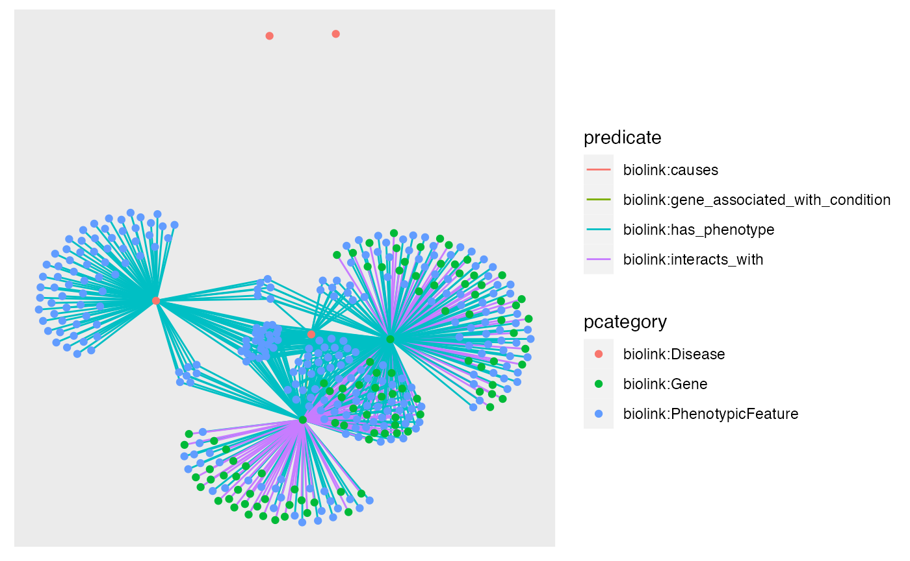
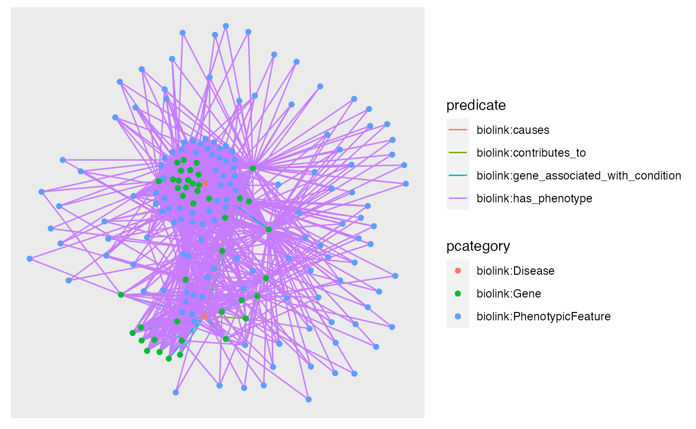
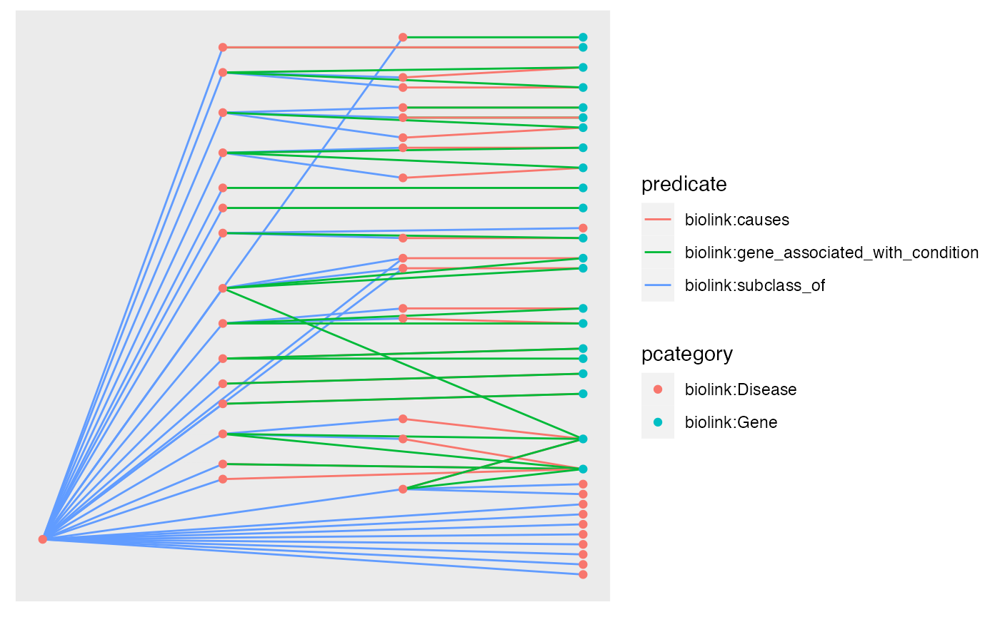
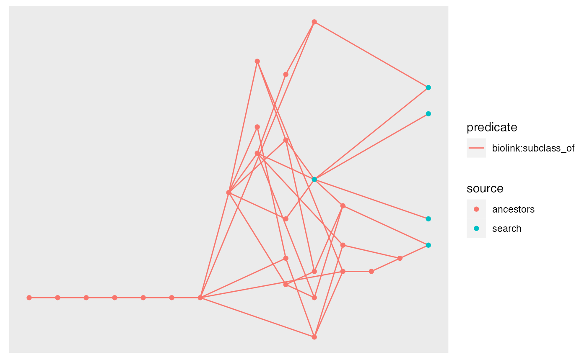
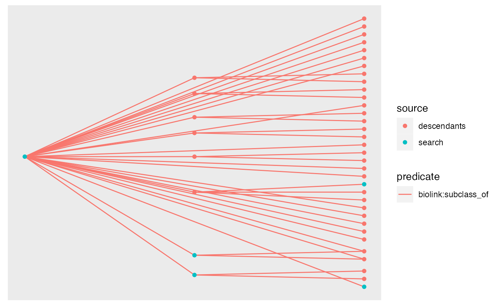
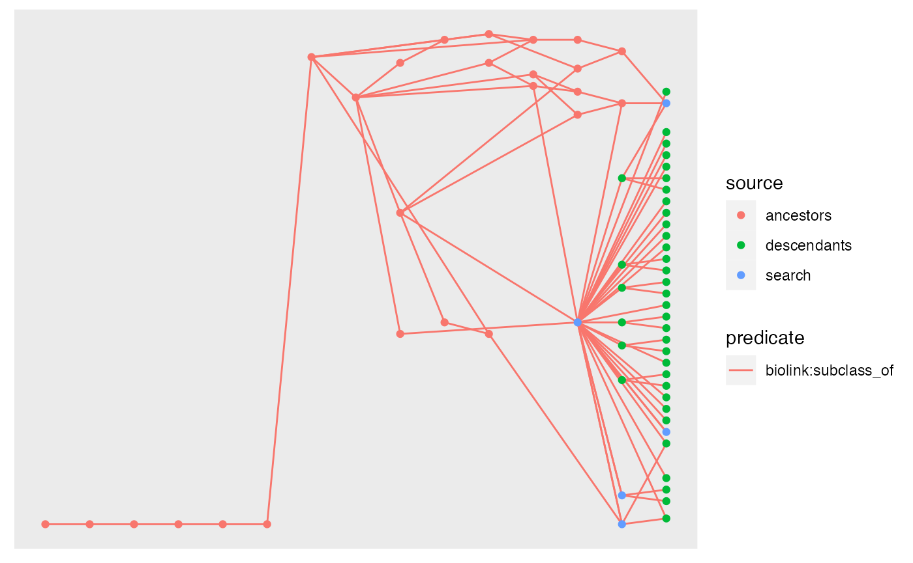

MonarchR Basics
Shawn T O’Neil
2024-02-17
Basics.RmdBasic Usage
The MonarchR package is designed to support interactive queries against the Monarch Initiative Knowledge Graph (KG). It is in early development and testing, and relies upon publicly-available services managed by the Monarch Initiative.
Briefly, a graph stored in a local variable represents a subsets of
nodes and/or edges from the larger KG. These local graphs are also tidygraph
objects (which are igraphs)
providing a large range of graph-related functionality.
First, let’s load some useful libraries:
suppressMessages({
library(monarchr)
library(dplyr)
library(tidygraph)
library(kableExtra) # for kbl() table output formatting
library(ggraph)
library(ggiraph)
})The monarch_search() function uses the keyword search API, returning
up to limit nodes, and no edges connecting them:
# ^ set output width for Rmd output
eds_hits <- monarch_search("Ehlers-danlos syndrome", limit = 3)
nodes(eds_hits)## # A tibble: 3 × 8
## id category pcategory iri synonym name description provided_by
## <chr> <named list> <chr> <chr> <named list> <chr> <chr> <named lis>
## 1 MONDO:0007525 <chr [6]> biolink:Disease http://purl.obolibrary.org/obo/MONDO_0007525 <chr [17]> Ehlers-Danlos syndrome, arthrochalasis type Arthrochalasia Ehlers-Danlos syndrome (aEDS) is an inherited connective tissue disorder that is caused by defects in a protein called collag… <chr [1]>
## 2 MONDO:0020066 <chr [6]> biolink:Disease http://purl.obolibrary.org/obo/MONDO_0020066 <chr [19]> Ehlers-Danlos syndrome The Ehlers–Danlos syndromes (EDS) are a clinically and genetically heterogeneous group of heritable connective tissue disorders (HCTDs) char… <chr [1]>
## 3 MONDO:0034021 <chr [6]> biolink:Disease http://purl.obolibrary.org/obo/MONDO_0034021 <chr [1]> spondylodysplastic Ehlers-Danlos syndrome NA <chr [1]>
edges(eds_hits)## # A tibble: 0 × 2
## # ℹ 2 variables: from <int>, to <int>Tidygraphs are stored as node and edge dataframes; we can “activate”
one or the other to manipulate it, or extract it with
as_tibble(). Let’s add a source to these nodes
of "search", and print the node table.
eds_hits <- eds_hits |>
activate(nodes) |>
mutate(source = "search") |>
select(id, source, everything()) # move new source col to 2nd position
nodes(eds_hits)## # A tibble: 3 × 9
## id source category pcategory iri synonym name description provided_by
## <chr> <chr> <named list> <chr> <chr> <named list> <chr> <chr> <named lis>
## 1 MONDO:0007525 search <chr [6]> biolink:Disease http://purl.obolibrary.org/obo/MONDO_0007525 <chr [17]> Ehlers-Danlos syndrome, arthrochalasis type Arthrochalasia Ehlers-Danlos syndrome (aEDS) is an inherited connective tissue disorder that is caused by defects in a protein called… <chr [1]>
## 2 MONDO:0020066 search <chr [6]> biolink:Disease http://purl.obolibrary.org/obo/MONDO_0020066 <chr [19]> Ehlers-Danlos syndrome The Ehlers–Danlos syndromes (EDS) are a clinically and genetically heterogeneous group of heritable connective tissue disorders (HCTD… <chr [1]>
## 3 MONDO:0034021 search <chr [6]> biolink:Disease http://purl.obolibrary.org/obo/MONDO_0034021 <chr [1]> spondylodysplastic Ehlers-Danlos syndrome NA <chr [1]>The pcategory column is a unique addition of MonarchR:
typically, nodes are annotated with multiple categories, which is stored
in the category field in the KG. These tend to relate to
ontological concepts, in that a biolink:Disease is also a
biolink:BiologicalEntity and
biolink:NamedThing. Typically, one of these is most of
interest in application. Rather than try and determine this “primary”
category of interest from the data, we set a priority list of categories
to use, choosing the first available prioritized category, or the first
category available as a fallback. This can be configured via the
kg_prefs option should you so choose:
options("kg_prefs")## $kg_prefs
## $kg_prefs$monarch_kg
## $kg_prefs$monarch_kg$category_priority
## [1] "biolink:Disease" "biolink:PhenotypicFeature" "biolink:Gene" "biolink:AnatomicalEntity" "biolink:BiologicalProcess" "biolink:Pathway" "biolink:Cell" "biolink:CellularComponent" "biolink:ChemicalEntity" "biolink:Drug"Let’s see what kinds of connections exist in the broader graph for these nodes, which is a good idea before we go and fetch some of them. We can summarize the nodes in the surrounding neighborhood, or the edges:
library(knitr)
summarize_neighborhood(eds_hits, summarize = "nodes")## # A tibble: 3 × 2
## pcategory count
## <chr> <int>
## 1 biolink:PhenotypicFeature 154
## 2 biolink:Disease 30
## 3 biolink:Gene 3
summarize_neighborhood(eds_hits, summarize = "edges")## # A tibble: 5 × 6
## count query_pcategory predicate result_pcategory query_category result_category
## <int> <chr> <chr> <chr> <list> <list>
## 1 153 biolink:Disease biolink:has_phenotype biolink:PhenotypicFeature <list [6]> <list [6]>
## 2 30 biolink:Disease biolink:subclass_of biolink:Disease <list [6]> <list [6]>
## 3 2 biolink:Disease biolink:gene_associated_with_condition biolink:Gene <list [6]> <list [12]>
## 4 1 biolink:Disease biolink:causes biolink:Gene <list [6]> <list [12]>
## 5 1 biolink:Disease biolink:has_mode_of_inheritance biolink:PhenotypicFeature <list [6]> <list [6]>Looking at the neighborhood node summary, there are quite a few phenotypes connected to these diseases, 30 other diseases, and 3 genes.
To see what kinds types of relationships these are, we can look at
the neighborhood edge summary, which breaks down the set of edges
connected to these nodes in a more complex way. Each row represents a
set of connections from query nodes in our graph
g, to result nodes in the surrounding
neighborhood, broken out by the category of the query and result nodes.
Note that predicate may be either direction here: result genes
-cause-> our query diseases, but our query diseases -have-> result
phenotypes. Finally, for accuracy the grouping is actually the full
category list and the pcategory is defined from those, but
in practice pcategory is a good descriptor.
In this example we can see that there are two links from our diseases
(potentially from the same one) to genes via
biolink:gene_associated_with_disease, and one connected to
a gene via biolink:causes. There are also two kinds of
connections to Phenotypes: biolink:has_phenotype and
biolink:has_mode_of_inheritance. Let’s fetch the
connections to genes:
eds_with_genes <- eds_hits |>
fetch_edges(result_categories = "biolink:Gene")## Joining with `by = join_by(id, category, pcategory, iri, synonym, name, description, provided_by)`
eds_with_genes## # A tbl_graph: 5 nodes and 3 edges
## #
## # A directed acyclic multigraph with 3 components
## #
## # Node Data: 5 × 14 (active)
## id source category pcategory iri synonym name description provided_by in_taxon_label symbol full_name xref in_taxon
## <chr> <chr> <named list> <chr> <chr> <named list> <chr> <chr> <named lis> <chr> <chr> <chr> <name> <named >
## 1 MONDO:0007525 search <chr [6]> biolink:Disease http://purl.obolibrary.org/obo/MONDO_0007525 <chr [17]> Ehlers-Danlos syndrome, arthrochalasis type Arthrochalasia Ehlers-Danlos syndrome (aEDS) is an inherited connective tissue disord… <chr [1]> NA NA NA <lgl> <lgl>
## 2 MONDO:0020066 search <chr [6]> biolink:Disease http://purl.obolibrary.org/obo/MONDO_0020066 <chr [19]> Ehlers-Danlos syndrome The Ehlers–Danlos syndromes (EDS) are a clinically and genetically heterogeneous grou… <chr [1]> NA NA NA <NULL> <NULL>
## 3 MONDO:0034021 search <chr [6]> biolink:Disease http://purl.obolibrary.org/obo/MONDO_0034021 <chr [1]> spondylodysplastic Ehlers-Danlos syndrome NA <chr [1]> NA NA NA <NULL> <NULL>
## 4 HGNC:2197 NA <chr [12]> biolink:Gene NA <chr [2]> COL1A1 NA <chr [1]> Homo sapiens COL1A1 collagen… <chr> <chr>
## 5 HGNC:2198 NA <chr [12]> biolink:Gene NA <chr [9]> COL1A2 NA <chr [1]> Homo sapiens COL1A2 collagen… <chr> <chr>
## #
## # Edge Data: 3 × 15
## from to subject predicate object primary_knowledge_source `biolink:primary_knowledge_source` `biolink:aggregator_knowledge_source` original_subject knowledge_source aggregator_knowledge_source provided_by original_object id category
## <int> <int> <chr> <chr> <chr> <named list> <named list> <named list> <named list> <named list> <named list> <named list> <named list> <named list> <named list>
## 1 4 1 HGNC:2197 biolink:causes MONDO:0007525 <chr [1]> <chr [1]> <list [1]> <chr [1]> <chr [1]> <list [1]> <list [1]> <chr [1]> <chr [1]> <list [1]>
## 2 4 1 HGNC:2197 biolink:gene_associated_with_condition MONDO:0007525 <chr [1]> <chr [1]> <list [1]> <chr [1]> <chr [1]> <list [1]> <list [1]> <chr [1]> <chr [1]> <list [1]>
## 3 5 1 HGNC:2198 biolink:gene_associated_with_condition MONDO:0007525 <chr [1]> <chr [1]> <list [1]> <chr [1]> <chr [1]> <list [1]> <list [1]> <chr [1]> <chr [1]> <list [1]>Notice that our source column is still there: we added
it as a custom column to the nodes data earlier, but now
new nodes have been been filled with NA values. We can fix
this up as we pull in the data. This ability to easily modify, filter
and otherwise manipulate the graph data via tabular primitives is a
powerful feature of tidygraph, this blog
post is a good introduction to more.
eds_with_genes <- eds_hits |>
fetch_edges(result_categories = "biolink:Gene") |>
activate(nodes) |>
mutate(source = replace_na(source, "genelinks"))## Joining with `by = join_by(id, category, pcategory, iri, synonym, name, description, provided_by)`
eds_with_genes## # A tbl_graph: 5 nodes and 3 edges
## #
## # A directed acyclic multigraph with 3 components
## #
## # Node Data: 5 × 14 (active)
## id source category pcategory iri synonym name description provided_by in_taxon_label symbol full_name xref in_taxon
## <chr> <chr> <named list> <chr> <chr> <named list> <chr> <chr> <named lis> <chr> <chr> <chr> <name> <named >
## 1 MONDO:0007525 search <chr [6]> biolink:Disease http://purl.obolibrary.org/obo/MONDO_0007525 <chr [17]> Ehlers-Danlos syndrome, arthrochalasis type Arthrochalasia Ehlers-Danlos syndrome (aEDS) is an inherited connective tissue dis… <chr [1]> NA NA NA <lgl> <lgl>
## 2 MONDO:0020066 search <chr [6]> biolink:Disease http://purl.obolibrary.org/obo/MONDO_0020066 <chr [19]> Ehlers-Danlos syndrome The Ehlers–Danlos syndromes (EDS) are a clinically and genetically heterogeneous g… <chr [1]> NA NA NA <NULL> <NULL>
## 3 MONDO:0034021 search <chr [6]> biolink:Disease http://purl.obolibrary.org/obo/MONDO_0034021 <chr [1]> spondylodysplastic Ehlers-Danlos syndrome NA <chr [1]> NA NA NA <NULL> <NULL>
## 4 HGNC:2197 genelinks <chr [12]> biolink:Gene NA <chr [2]> COL1A1 NA <chr [1]> Homo sapiens COL1A1 collagen… <chr> <chr>
## 5 HGNC:2198 genelinks <chr [12]> biolink:Gene NA <chr [9]> COL1A2 NA <chr [1]> Homo sapiens COL1A2 collagen… <chr> <chr>
## #
## # Edge Data: 3 × 15
## from to subject predicate object primary_knowledge_source `biolink:primary_knowledge_source` `biolink:aggregator_knowledge_source` original_subject knowledge_source aggregator_knowledge_source provided_by original_object id category
## <int> <int> <chr> <chr> <chr> <named list> <named list> <named list> <named list> <named list> <named list> <named list> <named list> <named list> <named list>
## 1 4 1 HGNC:2197 biolink:causes MONDO:0007525 <chr [1]> <chr [1]> <list [1]> <chr [1]> <chr [1]> <list [1]> <list [1]> <chr [1]> <chr [1]> <list [1]>
## 2 4 1 HGNC:2197 biolink:gene_associated_with_condition MONDO:0007525 <chr [1]> <chr [1]> <list [1]> <chr [1]> <chr [1]> <list [1]> <list [1]> <chr [1]> <chr [1]> <list [1]>
## 3 5 1 HGNC:2198 biolink:gene_associated_with_condition MONDO:0007525 <chr [1]> <chr [1]> <list [1]> <chr [1]> <chr [1]> <list [1]> <list [1]> <chr [1]> <chr [1]> <list [1]>
# summarize the outgoing edges connected to the graph so far
# summarize_neighborhood(eds_with_genes, direction = "out", summarize = "edges")The fetch_edges function allows us to narrow which edges
to fetch by specifying the directionality, as well as sets of predicates
and result (neighborhood) node categories allowed. We have diseases and
connected genes: let’s pull in further connections to either Phenotypes
or Genes, via outgoing has_phenotype or interacts_with
relationships:
eds_with_genes_phenos_expanded <- eds_with_genes |>
fetch_edges(direction = "out",
predicates = c("biolink:has_phenotype", "biolink:interacts_with"),
result_categories = c("biolink:Gene", "biolink:PhenotypicFeature"))## Joining with `by = join_by(id, category, pcategory, iri, synonym, name, description, provided_by, in_taxon_label, symbol, full_name, xref, in_taxon)`
eds_with_genes_phenos_expanded## # A tbl_graph: 385 nodes and 592 edges
## #
## # A directed multigraph with 3 components
## #
## # Node Data: 385 × 14 (active)
## id source category pcategory iri synonym name description provided_by in_taxon_label symbol full_name xref in_taxon
## <chr> <chr> <named list> <chr> <chr> <named list> <chr> <chr> <named lis> <chr> <chr> <chr> <name> <named >
## 1 MONDO:0007525 search <chr [6]> biolink:Disease http://purl.obolibrary.org/obo/MONDO_0007525 <chr [17]> Ehlers-Danlos syndrome, arthrochalasis type Arthrochalasia Ehlers-Danlos syndrome (aEDS) is an inherited connective… <chr [1]> NA NA NA <lgl> <lgl>
## 2 MONDO:0020066 search <chr [6]> biolink:Disease http://purl.obolibrary.org/obo/MONDO_0020066 <chr [19]> Ehlers-Danlos syndrome The Ehlers–Danlos syndromes (EDS) are a clinically and genetically hete… <chr [1]> NA NA NA <NULL> <NULL>
## 3 MONDO:0034021 search <chr [6]> biolink:Disease http://purl.obolibrary.org/obo/MONDO_0034021 <chr [1]> spondylodysplastic Ehlers-Danlos syndrome NA <chr [1]> NA NA NA <NULL> <NULL>
## 4 HGNC:2197 genelinks <chr [12]> biolink:Gene NA <chr [2]> COL1A1 NA <chr [1]> Homo sapiens COL1A1 collagen… <chr> <chr>
## 5 HGNC:2198 genelinks <chr [12]> biolink:Gene NA <chr [9]> COL1A2 NA <chr [1]> Homo sapiens COL1A2 collagen… <chr> <chr>
## 6 HP:0025509 NA <chr [6]> biolink:PhenotypicFeature http://purl.obolibrary.org/obo/HP_0025509 <lgl [1]> Piezogenic pedal papules Flesh-colored or yellowish papules, 2 mm or larger, that are responses … <chr [1]> NA NA NA <lgl> <lgl>
## 7 HP:0001822 NA <chr [6]> biolink:PhenotypicFeature http://purl.obolibrary.org/obo/HP_0001822 <chr [3]> Hallux valgus Lateral deviation of the great toe (i.e., in the direction of the littl… <chr [1]> NA NA NA <lgl> <lgl>
## 8 HP:0010749 NA <chr [6]> biolink:PhenotypicFeature http://purl.obolibrary.org/obo/HP_0010749 <chr [1]> Blepharochalasis Blepharochalasis is characterized by recurrent, non-painful, nonerythem… <chr [1]> NA NA NA <lgl> <lgl>
## 9 HP:0003834 NA <chr [6]> biolink:PhenotypicFeature http://purl.obolibrary.org/obo/HP_0003834 <chr [1]> Shoulder dislocation A displacement or misalignment of the humerus with respect to the other… <chr [1]> NA NA NA <lgl> <lgl>
## 10 HP:0010783 NA <chr [6]> biolink:PhenotypicFeature http://purl.obolibrary.org/obo/HP_0010783 <chr [1]> Erythema Redness of the skin, caused by hyperemia of the capillaries in the lowe… <chr [1]> NA NA NA <lgl> <lgl>
## # ℹ 375 more rows
## #
## # Edge Data: 592 × 19
## from to subject predicate object primary_knowledge_so…¹ biolink:primary_know…² biolink:aggregator_k…³ original_subject knowledge_source aggregator_knowledge…⁴ provided_by original_object id category has_evidence publications frequency_qualifier onset_qualifier
## <int> <int> <chr> <chr> <chr> <named list> <named list> <named list> <named list> <named list> <named list> <named lis> <named list> <nam> <named > <named list> <named list> <named list> <named list>
## 1 4 1 HGNC:2197 biolink:causes MONDO… <chr [1]> <chr [1]> <list [1]> <chr [1]> <chr [1]> <list [1]> <list [1]> <chr [1]> <chr> <list> <NULL> <NULL> <NULL> <NULL>
## 2 4 1 HGNC:2197 biolink:gene_associated_with_condition MONDO… <chr [1]> <chr [1]> <list [1]> <chr [1]> <chr [1]> <list [1]> <list [1]> <chr [1]> <chr> <list> <NULL> <NULL> <NULL> <NULL>
## 3 5 1 HGNC:2198 biolink:gene_associated_with_condition MONDO… <chr [1]> <chr [1]> <list [1]> <chr [1]> <chr [1]> <list [1]> <list [1]> <chr [1]> <chr> <list> <NULL> <NULL> <NULL> <NULL>
## # ℹ 589 more rows
## # ℹ abbreviated names: ¹primary_knowledge_source, ²`biolink:primary_knowledge_source`, ³`biolink:aggregator_knowledge_source`, ⁴aggregator_knowledge_sourceLet’s create a quick visualization:
ggraph(eds_with_genes_phenos_expanded, layout = "fr") +
geom_edge_link(aes(color = predicate)) +
geom_node_point(aes(color = pcategory))## Warning: Using the `size` aesthetic in this geom was deprecated in ggplot2 3.4.0.
## ℹ Please use `linewidth` in the `default_aes` field and elsewhere instead.
## This warning is displayed once every 8 hours.
## Call `lifecycle::last_lifecycle_warnings()` to see where this warning was generated.
For our next trick, let’s find all the phenotypes connected to genes associated with FA and Cystic Fibrosis. We’ll then find the intersection of those phenotypes with an inner join on the nodes.
fa <- monarch_search("Fanconi anemia", limit = 1) %>%
fetch_edges(result_categories = "biolink:Gene") %>%
fetch_edges(direction = "out", predicates = "biolink:has_phenotype")## Joining with `by = join_by(id, category, pcategory, iri, synonym, name, description, provided_by)`
## Joining with `by = join_by(id, category, pcategory, iri, synonym, name, description, provided_by, in_taxon_label, symbol, full_name, xref, in_taxon)`
cf <- monarch_search("Cystic Fibrosis", limit = 1) %>%
fetch_edges(result_categories = "biolink:Gene") %>%
fetch_edges(direction = "out", predicates = "biolink:has_phenotype")## Joining with `by = join_by(id, category, pcategory, iri, synonym, name, description, provided_by)`
## Joining with `by = join_by(id, category, pcategory, iri, synonym, name, description, provided_by, in_taxon_label, symbol, xref, full_name, in_taxon)`
shared_nodes <- inner_join(nodes(fa), nodes(cf))## Joining with `by = join_by(id, category, pcategory, iri, synonym, name, description, provided_by, in_taxon_label, symbol, full_name, xref, in_taxon)`
shared_nodes## # A tibble: 142 × 13
## id category pcategory iri synonym name description provided_by in_taxon_label symbol full_name xref in_taxon
## <chr> <named list> <chr> <chr> <named list> <chr> <chr> <named lis> <chr> <chr> <chr> <nam> <named >
## 1 HP:0002027 <chr [6]> biolink:PhenotypicFeature http://purl.obolibrary.org/obo/HP_0002027 <chr [7]> Abdominal pain "An unpleasant sensation characterized by physical discomfort (such as pricking, throbbing, or ac… <chr [1]> NA NA NA <lgl> <lgl>
## 2 HP:0001738 <chr [6]> biolink:PhenotypicFeature http://purl.obolibrary.org/obo/HP_0001738 <chr [2]> Exocrine pancreatic insufficiency "Impaired function of the exocrine pancreas associated with a reduced ability to digest foods bec… <chr [1]> NA NA NA <lgl> <lgl>
## 3 HP:0002039 <chr [6]> biolink:PhenotypicFeature http://purl.obolibrary.org/obo/HP_0002039 <chr [1]> Anorexia "Anorexia, or the loss of appetite for food, is a medical condition." <chr [1]> NA NA NA <lgl> <lgl>
## 4 HP:0001249 <chr [6]> biolink:PhenotypicFeature http://purl.obolibrary.org/obo/HP_0001249 <chr [10]> Intellectual disability "Subnormal intellectual functioning which originates during the developmental period. Intellectua… <chr [1]> NA NA NA <lgl> <lgl>
## 5 HP:0001873 <chr [6]> biolink:PhenotypicFeature http://purl.obolibrary.org/obo/HP_0001873 <chr [1]> Thrombocytopenia "A reduction in the number of circulating thrombocytes." <chr [1]> NA NA NA <lgl> <lgl>
## 6 HP:0004322 <chr [6]> biolink:PhenotypicFeature http://purl.obolibrary.org/obo/HP_0004322 <chr [5]> Short stature "\"\"\"A height below that which is expected according to age and gender norms. Although there is… <chr [1]> NA NA NA <lgl> <lgl>
## 7 HP:0000520 <chr [6]> biolink:PhenotypicFeature http://purl.obolibrary.org/obo/HP_0000520 <chr [10]> Proptosis "An eye that is protruding anterior to the plane of the face to a greater extent than is typical." <chr [1]> NA NA NA <lgl> <lgl>
## 8 HP:0004396 <chr [6]> biolink:PhenotypicFeature http://purl.obolibrary.org/obo/HP_0004396 <chr [4]> Poor appetite "A reduced desire to eat." <chr [1]> NA NA NA <lgl> <lgl>
## 9 HP:0001945 <chr [6]> biolink:PhenotypicFeature http://purl.obolibrary.org/obo/HP_0001945 <chr [3]> Fever "Body temperature elevated above the normal range." <chr [1]> NA NA NA <lgl> <lgl>
## 10 HP:0012639 <chr [6]> biolink:PhenotypicFeature http://purl.obolibrary.org/obo/HP_0012639 <chr [2]> Abnormal nervous system morphology "A structural anomaly of the nervous system." <chr [1]> NA NA NA <lgl> <lgl>
## # ℹ 132 more rowsLet’s see these in context, by doing a full join on our EDS and CF graphs, then keeping only nodes that are either diseases, genes, or one of these shared phenotypes:
merged <- fa %>%
graph_join(cf) %>%
activate(nodes) %>%
filter(pcategory %in% c("biolink:Gene", "biolink:Disease") | id %in% shared_nodes$id)## Joining with `by = join_by(id, category, pcategory, iri, synonym, name, description, provided_by, in_taxon_label, symbol, full_name, xref, in_taxon)`
ggraph(merged, layout = "fr") +
geom_edge_link(aes(color = predicate)) +
geom_node_point(aes(color = pcategory))
Transitivity
The fetch_edges function can also be used to fetch edges
transitively. For example, if we were to try and look for genes
connected to the first hit for Ehlers-Danlos Syndrome, we would find
none. However, we can use the transitive parameter to find
genes connected to diseases that are subclasses of Ehlers-Danlos
Syndrome, and then pull in the genes from there.
eds_with_subtypes <- monarch_search("Ehlers-danlos syndrome", limit = 1) |>
fetch_edges(direction = "in", predicates = "biolink:subclass_of", transitive = TRUE) |>
fetch_edges(result_categories = "biolink:Gene")## Joining with `by = join_by(id, category, pcategory, iri, synonym, name, description, provided_by)`
## Joining with `by = join_by(id, category, pcategory, iri, synonym, name, description, provided_by)`
# plot
ggraph(eds_with_subtypes, layout = "sugiyama") +
geom_edge_link(aes(color = predicate)) +
geom_node_point(aes(color = pcategory)) +
coord_flip()
When using transitive = TRUE, each relationship type
will traversed separately and the results joined. It’s always wise to
use transitive = TRUE with caution, as it can result in a
large number of edges being fetched, and always indicate a direction of
"in" or "out" to avoid fetching the entire
KG.
With some creativity, we do quite quite a lot with these few primatives. For example, from an initial search of 5 hits for EDS, we can visualize all of their ancestors. We can do the same for descendants. Note that these will find edges between the nodes in the search results, as well as intermediate nodes.
eds_search <- monarch_search("Ehlers-danlos syndrome", limit = 5) %>%
activate(nodes) %>%
mutate(source = "search")
eds_search_ancestors <- eds_search |>
fetch_edges(direction = "out", predicates = "biolink:subclass_of", transitive = TRUE) %>%
activate(nodes) %>%
mutate(source = replace_na(source, "ancestors"))## Joining with `by = join_by(id, category, pcategory, iri, synonym, name, description, provided_by)`
eds_search_descendants <- eds_search |>
fetch_edges(direction = "in", predicates = "biolink:subclass_of", transitive = TRUE) %>%
activate(nodes) %>%
mutate(source = replace_na(source, "descendants"))## Joining with `by = join_by(id, category, pcategory, iri, synonym, name, description, provided_by)`
ggraph(eds_search_ancestors, layout = "sugiyama") +
geom_edge_link(aes(color = predicate)) +
geom_node_point(aes(color = source)) +
coord_flip()
ggraph(eds_search_descendants, layout = "sugiyama") +
geom_edge_link(aes(color = predicate)) +
geom_node_point(aes(color = source)) +
coord_flip()
Let’s see the full join of this data, and if we take the inner join of the nodes, we should see just how our 5 search results are connected to each other (via intermediary nodes if necessary).
merged <- eds_search_ancestors |>
graph_join(eds_search_descendants)## Joining with `by = join_by(id, category, pcategory, iri, synonym, name, description, provided_by, source)`
ggraph(merged, layout = "sugiyama") +
geom_edge_link(aes(color = predicate)) +
geom_node_point(aes(color = source)) +
coord_flip()
inner <- eds_search_ancestors %>%
activate(nodes) %>%
inner_join(nodes(eds_search_descendants))## Joining with `by = join_by(id, category, pcategory, iri, synonym, name, description, provided_by, source)`
ggraph(inner, layout = "sugiyama") +
geom_edge_link(aes(color = predicate)) +
geom_node_point(aes(color = source)) +
coord_flip()
As a functional language, R provides powerful features for working
with lists of data. In this example we begin with a graph with 5 disease
nodes of interest; we use explode() to split the graph into
a list of 5 single-node graphs, then use lapply() to work
with these in parallel, fetching neighborhoods, extracting the nodes
data, and removing the original searched nodes based on the
source column we added earlier.
eds_search %>% # starting with a graph with 5 disease nodes
explode() %>% # split into a list of 5 single-node graphs
lapply(fetch_edges) %>% # fetch neighborhood edges for each graph
lapply(nodes) %>% # extract nodes df from each graph
lapply(function(nodes_df) {filter(nodes_df, is.na(source))}) # remove original seached nodes from each df## Joining with `by = join_by(id, category, pcategory, iri, synonym, name, description, provided_by)`
## Joining with `by = join_by(id, category, pcategory, iri, synonym, name, description, provided_by)`
## Joining with `by = join_by(id, category, pcategory, iri, synonym, name, description, provided_by)`
## Joining with `by = join_by(id, category, pcategory, iri, synonym, name, description, provided_by)`
## Joining with `by = join_by(id, category, pcategory, iri, synonym, name, description, provided_by)`## [[1]]
## # A tibble: 54 × 14
## id category pcategory iri synonym name description provided_by source in_taxon_label symbol full_name xref in_taxon
## <chr> <named list> <chr> <chr> <named list> <chr> <chr> <named lis> <chr> <chr> <chr> <chr> <nam> <named >
## 1 HP:0000938 <chr [6]> biolink:PhenotypicFeature http://purl.obolibrary.org/obo/HP_0000938 <chr [3]> Osteopenia Osteopenia is a term to define bone density that is not normal but also not as low as osteoporosis. By def… <chr [1]> NA NA NA NA <lgl> <lgl>
## 2 HP:0003502 <chr [6]> biolink:PhenotypicFeature http://purl.obolibrary.org/obo/HP_0003502 <chr [2]> Mild short stature A mild degree of short stature, more than -2 SD but not more than -3 SD from mean corrected for age and se… <chr [1]> NA NA NA NA <lgl> <lgl>
## 3 HP:0001075 <chr [6]> biolink:PhenotypicFeature http://purl.obolibrary.org/obo/HP_0001075 <chr [2]> Atrophic scars Scars that form a depression compared to the level of the surrounding skin because of damage to the collag… <chr [1]> NA NA NA NA <lgl> <lgl>
## 4 HP:0001027 <chr [6]> biolink:PhenotypicFeature http://purl.obolibrary.org/obo/HP_0001027 <chr [1]> Soft, doughy skin A skin texture that is unusually soft (and may feel silky), and has a malleable consistency resembling tha… <chr [1]> NA NA NA NA <lgl> <lgl>
## 5 HP:0000023 <chr [6]> biolink:PhenotypicFeature http://purl.obolibrary.org/obo/HP_0000023 <lgl [1]> Inguinal hernia Protrusion of the contents of the abdominal cavity through the inguinal canal. <chr [1]> NA NA NA NA <lgl> <lgl>
## 6 HP:0010547 <chr [6]> biolink:PhenotypicFeature http://purl.obolibrary.org/obo/HP_0010547 <lgl [1]> Muscle flaccidity A type of paralysis in which a muscle becomes soft and yields to passive stretching, which results from lo… <chr [1]> NA NA NA NA <lgl> <lgl>
## 7 HP:0010529 <chr [6]> biolink:PhenotypicFeature http://purl.obolibrary.org/obo/HP_0010529 <chr [4]> Echolalia The repetition of words or phrases that are odd or used in a nonsocial manner. These can be words or phras… <chr [1]> NA NA NA NA <lgl> <lgl>
## 8 HP:0001763 <chr [6]> biolink:PhenotypicFeature http://purl.obolibrary.org/obo/HP_0001763 <chr [4]> Pes planus A foot where the longitudinal arch of the foot is in contact with the ground or floor when the individual … <chr [1]> NA NA NA NA <lgl> <lgl>
## 9 HP:0001373 <chr [6]> biolink:PhenotypicFeature http://purl.obolibrary.org/obo/HP_0001373 <chr [2]> Joint dislocation Displacement or malalignment of joints. <chr [1]> NA NA NA NA <lgl> <lgl>
## 10 HP:0001387 <chr [6]> biolink:PhenotypicFeature http://purl.obolibrary.org/obo/HP_0001387 <chr [3]> Joint stiffness Joint stiffness is a perceived sensation of tightness in a joint or joints when attempting to move them af… <chr [1]> NA NA NA NA <lgl> <lgl>
## # ℹ 44 more rows
##
## [[2]]
## # A tibble: 48 × 14
## id category pcategory iri synonym name description provided_by source in_taxon_label symbol full_name xref in_taxon
## <chr> <named list> <chr> <chr> <named list> <chr> <chr> <named lis> <chr> <chr> <chr> <chr> <nam> <named >
## 1 HP:0000007 <chr [6]> biolink:PhenotypicFeature http://purl.obolibrary.org/obo/HP_0000007 <chr [4]> Autosomal recessive inheritance A mode of inheritance that is observed for traits related to a gene enc… <chr [1]> NA NA NA NA <lgl> <lgl>
## 2 MONDO:0007526 <chr [6]> biolink:Disease http://purl.obolibrary.org/obo/MONDO_0007526 <chr [20]> Ehlers-Danlos syndrome, spondylodysplastic type A form of Ehlers-Danlos syndrome characterized by a premature aging wit… <chr [1]> NA NA NA NA <lgl> <lgl>
## 3 MONDO:0016761 <chr [6]> biolink:Disease http://purl.obolibrary.org/obo/MONDO_0016761 <chr [2]> spondyloepiphyseal dysplasia An osteochondrodysplasia that results in abnormalities of bone growth i… <chr [1]> NA NA NA NA <lgl> <lgl>
## 4 HP:0000592 <chr [6]> biolink:PhenotypicFeature http://purl.obolibrary.org/obo/HP_0000592 <chr [7]> Blue sclerae An abnormal bluish coloration of the sclera. <chr [1]> NA NA NA NA <lgl> <lgl>
## 5 HP:0003370 <chr [6]> biolink:PhenotypicFeature http://purl.obolibrary.org/obo/HP_0003370 <chr [5]> Flat capital femoral epiphysis An abnormal flattening of the proximal epiphysis of the femur. <chr [1]> NA NA NA NA <lgl> <lgl>
## 6 HP:0000938 <chr [6]> biolink:PhenotypicFeature http://purl.obolibrary.org/obo/HP_0000938 <chr [3]> Osteopenia Osteopenia is a term to define bone density that is not normal but also… <chr [1]> NA NA NA NA <lgl> <lgl>
## 7 HP:0000465 <chr [6]> biolink:PhenotypicFeature http://purl.obolibrary.org/obo/HP_0000465 <chr [3]> Webbed neck Pterygium colli is a congenital skin fold that runs along the sides of … <chr [1]> NA NA NA NA <lgl> <lgl>
## 8 HP:0001382 <chr [6]> biolink:PhenotypicFeature http://purl.obolibrary.org/obo/HP_0001382 <chr [7]> Joint hypermobility The ability of a joint to move beyond its normal range of motion. <chr [1]> NA NA NA NA <lgl> <lgl>
## 9 HP:0000520 <chr [6]> biolink:PhenotypicFeature http://purl.obolibrary.org/obo/HP_0000520 <chr [10]> Proptosis An eye that is protruding anterior to the plane of the face to a greate… <chr [1]> NA NA NA NA <lgl> <lgl>
## 10 HP:0010049 <chr [6]> biolink:PhenotypicFeature http://purl.obolibrary.org/obo/HP_0010049 <chr [9]> Short metacarpal Diminished length of one or more metacarpal bones in relation to the ot… <chr [1]> NA NA NA NA <lgl> <lgl>
## # ℹ 38 more rows
##
## [[3]]
## # A tibble: 73 × 14
## id category pcategory iri synonym name description provided_by source in_taxon_label symbol full_name xref in_taxon
## <chr> <named list> <chr> <chr> <named list> <chr> <chr> <named lis> <chr> <chr> <chr> <chr> <nam> <named >
## 1 HP:0000015 <chr [6]> biolink:PhenotypicFeature http://purl.obolibrary.org/obo/HP_0000015 <chr [1]> Bladder diverticulum Diverticulum (sac or pouch) in the wall of the urinary bladder. <chr [1]> NA NA NA NA <lgl> <lgl>
## 2 HP:0002650 <chr [6]> biolink:PhenotypicFeature http://purl.obolibrary.org/obo/HP_0002650 <lgl [1]> Scoliosis The presence of an abnormal lateral curvature of the spine. <chr [1]> NA NA NA NA <lgl> <lgl>
## 3 HP:0000978 <chr [6]> biolink:PhenotypicFeature http://purl.obolibrary.org/obo/HP_0000978 <chr [5]> Bruising susceptibility An ecchymosis (bruise) refers to the skin discoloration caused by the escape of blood into the tissue… <chr [1]> NA NA NA NA <lgl> <lgl>
## 4 HP:0002758 <chr [6]> biolink:PhenotypicFeature http://purl.obolibrary.org/obo/HP_0002758 <chr [1]> Osteoarthritis Degeneration (wear and tear) of articular cartilage, i.e., of the joint surface. Joint degeneration m… <chr [1]> NA NA NA NA <lgl> <lgl>
## 5 HP:0003834 <chr [6]> biolink:PhenotypicFeature http://purl.obolibrary.org/obo/HP_0003834 <chr [1]> Shoulder dislocation A displacement or misalignment of the humerus with respect to the other bones of the should joint. No… <chr [1]> NA NA NA NA <lgl> <lgl>
## 6 HP:0002829 <chr [6]> biolink:PhenotypicFeature http://purl.obolibrary.org/obo/HP_0002829 <chr [4]> Arthralgia Joint pain. <chr [1]> NA NA NA NA <lgl> <lgl>
## 7 HP:0000993 <chr [6]> biolink:PhenotypicFeature http://purl.obolibrary.org/obo/HP_0000993 <chr [1]> Molluscoid pseudotumors Bluish-grey, spongy nodules associated with scars over pressure points and easily traumatized areas l… <chr [1]> NA NA NA NA <lgl> <lgl>
## 8 HP:0000286 <chr [6]> biolink:PhenotypicFeature http://purl.obolibrary.org/obo/HP_0000286 <chr [7]> Epicanthus A fold of skin starting above the medial aspect of the upper eyelid and arching downward to cover, pa… <chr [1]> NA NA NA NA <lgl> <lgl>
## 9 HP:0031364 <chr [6]> biolink:PhenotypicFeature http://purl.obolibrary.org/obo/HP_0031364 <chr [1]> Ecchymosis A purpuric lesion that is larger than 1 cm in diameter. <chr [1]> NA NA NA NA <lgl> <lgl>
## 10 HP:0001537 <chr [6]> biolink:PhenotypicFeature http://purl.obolibrary.org/obo/HP_0001537 <chr [1]> Umbilical hernia Protrusion of abdominal contents through a defect in the abdominal wall musculature around the umbili… <chr [1]> NA NA NA NA <lgl> <lgl>
## # ℹ 63 more rows
##
## [[4]]
## # A tibble: 30 × 9
## id category pcategory iri synonym name description provided_by source
## <chr> <named list> <chr> <chr> <named list> <chr> <chr> <named lis> <chr>
## 1 MONDO:0034021 <chr [6]> biolink:Disease http://purl.obolibrary.org/obo/MONDO_0034021 <chr [1]> spondylodysplastic Ehlers-Danlos syndrome NA <chr [1]> NA
## 2 MONDO:0016469 <chr [6]> biolink:Disease http://purl.obolibrary.org/obo/MONDO_0016469 <chr [1]> Ehlers-Danlos syndrome, vascular-like type Ehlers-Danlos, vascular-like type is an adult-onset form of Ehlers-Danlos syndrome characterized by spontaneous dis… <chr [1]> NA
## 3 MONDO:0016290 <chr [6]> biolink:Disease http://purl.obolibrary.org/obo/MONDO_0016290 <chr [3]> Hernández-Aguirre Negrete syndrome A syndrome is characterized by major seizures, dysmorphic features (round face, bulbous nose, wide mouth, prominent… <chr [1]> NA
## 4 MONDO:0007523 <chr [6]> biolink:Disease http://purl.obolibrary.org/obo/MONDO_0007523 <chr [17]> Ehlers-Danlos syndrome, hypermobility type Ehlers-Danlos syndrome, hypermobility type (HT-EDS) is the most frequent form of EDS, a group of hereditary connect… <chr [1]> NA
## 5 MONDO:0002254 <chr [6]> biolink:Disease http://purl.obolibrary.org/obo/MONDO_0002254 <chr [9]> syndromic disease A group of signs, symptoms, and clinicopathological characteristics that may or may not have a genetic basis and co… <chr [1]> NA
## 6 MONDO:0012114 <chr [6]> biolink:Disease http://purl.obolibrary.org/obo/MONDO_0012114 <chr [3]> Ehlers-Danlos syndrome, Beasley-Cohen type NA <chr [1]> NA
## 7 MONDO:0003847 <chr [6]> biolink:Disease http://purl.obolibrary.org/obo/MONDO_0003847 <chr [12]> hereditary disease A disease that is caused by genetic modifications where those modifications are inherited from a parent's genome. <chr [1]> NA
## 8 MONDO:0019755 <chr [6]> biolink:Disease http://purl.obolibrary.org/obo/MONDO_0019755 <chr [6]> developmental defect during embryogenesis A disease that has its basis in the disruption of embryonic morphogenesis. <chr [1]> NA
## 9 MONDO:0007528 <chr [6]> biolink:Disease http://purl.obolibrary.org/obo/MONDO_0007528 <chr [3]> Ehlers-Danlos syndrome, autosomal dominant, type unspecified NA <chr [1]> NA
## 10 MONDO:0007842 <chr [6]> biolink:Disease http://purl.obolibrary.org/obo/MONDO_0007842 <chr [15]> joint laxity, familial A type of Ehlers-Danlos syndrome characterized by generalized joint hypermobility often complicated by dislocation … <chr [1]> NA
## # ℹ 20 more rows
##
## [[5]]
## # A tibble: 106 × 9
## id category pcategory iri synonym name description provided_by source
## <chr> <named list> <chr> <chr> <named list> <chr> <chr> <named lis> <chr>
## 1 HP:0100777 <chr [6]> biolink:PhenotypicFeature http://purl.obolibrary.org/obo/HP_0100777 <chr [1]> Exostoses An exostosis is a benign growth the projects outward from the bone surface. It is capped by cartilage, and arises from a bone that develops fr… <chr [1]> NA
## 2 HP:0000347 <chr [6]> biolink:PhenotypicFeature http://purl.obolibrary.org/obo/HP_0000347 <chr [31]> Micrognathia Developmental hypoplasia of the mandible. <chr [1]> NA
## 3 HP:0001075 <chr [6]> biolink:PhenotypicFeature http://purl.obolibrary.org/obo/HP_0001075 <chr [2]> Atrophic scars Scars that form a depression compared to the level of the surrounding skin because of damage to the collagen, fat or other tissues below the s… <chr [1]> NA
## 4 HP:0010575 <chr [6]> biolink:PhenotypicFeature http://purl.obolibrary.org/obo/HP_0010575 <chr [2]> Dysplasia of the femoral head The presence of developmental dysplasia of the femoral head. <chr [1]> NA
## 5 HP:0012368 <chr [6]> biolink:PhenotypicFeature http://purl.obolibrary.org/obo/HP_0012368 <chr [4]> Flat face Absence of concavity or convexity of the face when viewed in profile. <chr [1]> NA
## 6 HP:0000501 <chr [6]> biolink:PhenotypicFeature http://purl.obolibrary.org/obo/HP_0000501 <lgl [1]> Glaucoma Glaucoma refers loss of retinal ganglion cells in a characteristic pattern of optic neuropathy usually associated with increased intraocular p… <chr [1]> NA
## 7 HP:0000938 <chr [6]> biolink:PhenotypicFeature http://purl.obolibrary.org/obo/HP_0000938 <chr [3]> Osteopenia Osteopenia is a term to define bone density that is not normal but also not as low as osteoporosis. By definition from the World Health Organi… <chr [1]> NA
## 8 HP:0002751 <chr [6]> biolink:PhenotypicFeature http://purl.obolibrary.org/obo/HP_0002751 <lgl [1]> Kyphoscoliosis An abnormal curvature of the spine in both a coronal (lateral) and sagittal (back-to-front) plane. <chr [1]> NA
## 9 HP:0001043 <chr [6]> biolink:PhenotypicFeature http://purl.obolibrary.org/obo/HP_0001043 <chr [1]> Prominent scalp veins NA <chr [1]> NA
## 10 HP:0001054 <chr [6]> biolink:PhenotypicFeature http://purl.obolibrary.org/obo/HP_0001054 <chr [2]> Numerous nevi NA <chr [1]> NA
## # ℹ 96 more rows